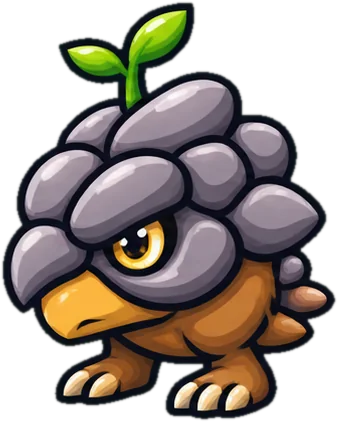

 Grass
GrassTap a stage to read its story.
Pebblet is a compact upright tortoise whose rounded body is covered in rough grey-brown rock-textured skin. A single small green sprout pokes up from the top of its shell like a tiny flag. Its wide eyes and stubby arms give it an endearing look, but the shell already feels like solid granite to the touch. Young Pebblets collect small stones in the crevices of their shells and tumble them around like marbles during play. They are found near the lower trails of the Granite Heights, where the first memory-stones are carved into boulders.
Field note: Pebblet polishes its single sprout every morning by rolling in the dew-wet grass at the cliff's base.
Granite Heights. Pebblet and its family are found in the Granite Heights. See everyone who lives there.
Share a Bond Food that matches its types to become friends. Pebblet loves:
A Bond Food is not a trick. It joins your spirit with the Kimuro's spirit, and only when it chooses you.
Print the Kimuro adventure packs: mazes, cards, a board game and Bond Mark medals.
See the printable packs